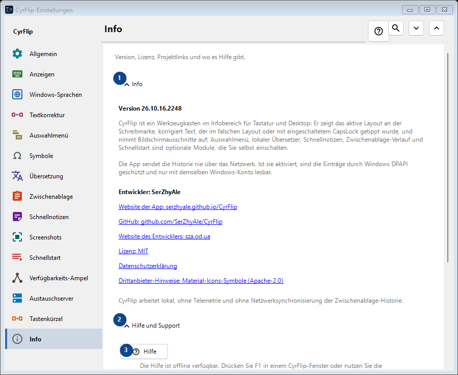
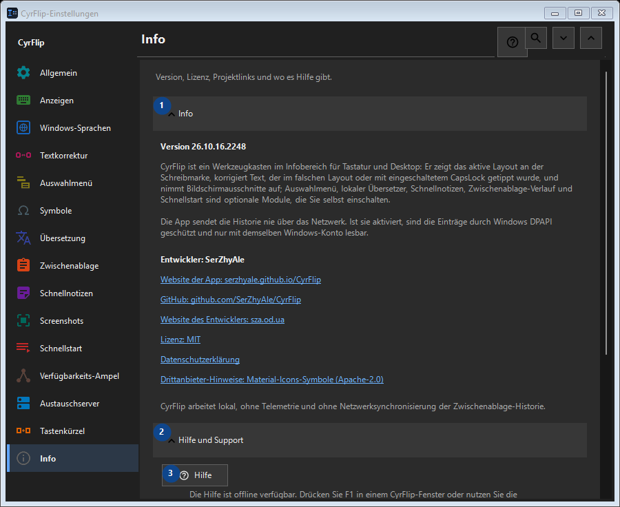

Info
Zweck
Version, Lizenz, Projektlinks und wo es Hilfe gibt.


Reihenfolge
Einstellungen gelten sofort. Eine feste Reihenfolge ist nicht nötig; nutzen Sie die Gruppen unten.
Elemente
1. Info
Nutzen Sie diesen Befehl für die genannte Aktion. Lesen Sie eine Bestätigung, bevor Sie zustimmen.
Ihre Tastenkürzel2. Hilfe und Support
Nutzen Sie diesen Befehl für die genannte Aktion. Lesen Sie eine Bestätigung, bevor Sie zustimmen.
Ihre Tastenkürzel3. Hilfe
Die Hilfe ist offline verfügbar. Drücken Sie F1 in einem CyrFlip-Fenster oder nutzen Sie die Hilfeschaltfläche.
Ihre Tastenkürzel4. Einführung anzeigen..
CyrFlip kennenlernen und einrichten.
Ihre Tastenkürzel5. Position der Schreibmarke diagnostizieren...
Erstellt einen lokalen Bericht darüber, wie Windows und UI Automation die Schreibmarke sehen. Nur nötig, wenn die Markierung in einer bestimmten App fehlt oder falsch sitzt.
Ihre Tastenkürzel6. Protokolle an den Autor senden..
Fasst die Protokolle von CyrFlip in einem Archiv zusammen und öffnet eine Nachricht an den Autor mit diesem Anhang. Gesendet wird sie von Ihnen - CyrFlip überträgt nichts ins Netz. Der Zwischenablage-Verlauf kommt nie ins Archiv.
Ihre Tastenkürzel